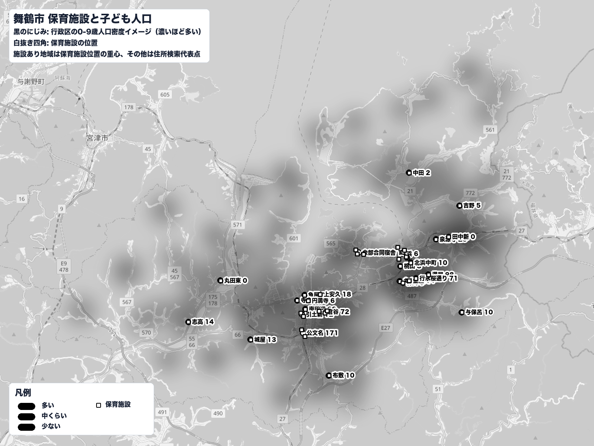

使用データ: 舞鶴市 行政区別年齢別人口（2019〜2023年）、 舞鶴市 保育施設一覧（緯度経度・定員つき、38施設）
舞鶴市の人口データと保育施設に関するデータを用いて、子どもの人口の変化と 保育施設の利用状況の関係について考察する。
舞鶴市が公開している人口データから、舞鶴市の0〜4歳人口は2019年の3,138人から 2023年には2,599人となり、約17%減少している。
| 年 | 0〜4歳人口 |
|---|---|
| 2019年 | 3,138人 |
| 2023年 | 2,599人 |
一方で、舞鶴市の調査では、教育・保育施設を利用している割合は 2019年の66.0%から2024年には74.4%へ上昇していた。 つまり、子どもの人数そのものは減少している一方で、 子ども1人あたりで見ると、教育・保育施設を利用する割合は高まっていることが分かる。
| 年 | 教育・保育施設を利用している割合 |
|---|---|
| 2019年 | 66.0% |
| 2024年 | 74.4% |
この背景の一つとして、子育て世代と重なる年代の女性の就労の増加が考えられる。 舞鶴市の女性の労働力率は、2015年から2020年にかけて、 30〜34歳では68.2%から88.5%、35〜39歳では72.2%から87.3%、 40〜44歳では76.7%から90.7%へ上昇している。
| 年齢 | 2015年 | 2020年 |
|---|---|---|
| 30〜34歳 | 68.2% | 88.5% |
| 35〜39歳 | 72.2% | 87.3% |
| 40〜44歳 | 76.7% | 90.7% |
子どもの数が減少していても、共働き家庭の増加などにより、家庭だけで子どもを見ることが 難しくなり、保育施設を必要とする家庭の割合が高まっている可能性があると考えられる。 そのため、保育施設の必要性は子どもの人口だけで判断することはできず、 子どもの人数に加えて、保護者の働き方や教育・保育施設の利用割合も合わせて考える必要がある。
出典: 舞鶴市人口データ（各年4月1日時点）、舞鶴市 教育・保育施設利用状況調査、国勢調査 女性労働力率
行政区423区・保育施設38件（2023/04/01時点の人口データ）で、 施設の立地と子ども人口の関係を調べた。

施設と人口が別々の場所に固まっているため、地区単位で比べると噛み合わない。
出典: 舞鶴市 行政区別年齢別人口（2023/04/01時点）、舞鶴市 保育施設一覧（緯度経度・定員データ）